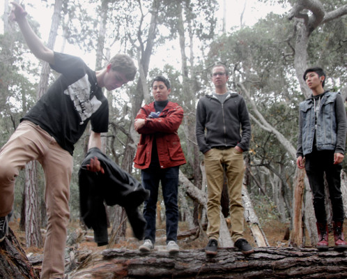

Night Beats
Night Beats are an American Psychedelic, Garage and Soul group based out of Seattle, Washington. The group consists of Lee Blackwell (Lead Guitar, Vocals), James Traeger (Drums) and Tarek Wegner (Bass). Night Beats incorporate sounds of early R&B, Texas Psychedelic Rock, UK Blues, Folk and Soul
Danny Lee "Blackwell" originally from Dallas, Texas founded Night Beats in 2009 when James Traeger moved from Austin, Texas to Seattle, Washington. Named as an homage to Sam Cooke's Magnum Opus[3] the then 2-piece picked up Tarek Wegner who was living in Seattle. The Night Beats toured extensively early on completing multiple North American tours during 2010 and were signed within weeks of self releasing their debut EP, the H-Bomb EP. Picked up by Chicago's Trouble in Mind Records (Ty Segall, Fresh and Only's, Hex Dispensers, etc.).

Wampire
After forming Wampire, Rocky Tinder and Eric Phipps steadily began to make a name for themselves in the same Portland, OR, scene that has
produced labelmates STRFKR as well as Unknown Mortal Orchestra.
It makes sense, then, that Wampire came to Polyvinyl's attention when the duo opened for STRFKR at a hometown Portland show and that UMO's bassist Jacob Portrait produced Wampire's debut full-length, Curiosity.
The choice of Portrait was a natural one, with both Tinder and Phipps believing he'd be able to contribute almost as much to the record as they would. And so, in mid-August Tinder and Phipps each brought fragments of song ideas into the studio,
before deconstructing, re-arranging, and fitting them back together piece by piece -- at times lyrics and melodies were thrown out, brought back from the dead, or improvised on the spot.
Black Pistol Fire
Black Pistol Fire is a Canadian Rock and Roll duo that split's time between Toronto, Ontario and Austin, Texas. Their wild and energetic rock-and-roll sound has been described as a mix of classic southern rock and garage punk, garnering comparisons to early Kings of Leon, Creedence Clearwater Revival, The White Stripes, and Clutch. It's clear that the band's sound spans many different eras and subgenres, relying on a classic rock and roll sound that has been updated for our modern times.
Black Pistol Fire features Kevin McKeown on Guitar/Lead Vocals and Eric Owen on Drums. The two have been friends since kindergarten and began playing music together when they discovered a shared passion for rock and roll music in high school. The two became founding members of rock and roll trio The Shenanigans. With The Shenanigans, they recorded an LP titled Bombshell Baby. After things with The Shenanigans and Toronto got stale, the two wanted a change of scenery and to try out something new. They then packed up their instruments and a bag of clothes and headed south. The band finally settled down in Austin, Texas in 2009 and Black Pistol Fire was born.

Burnin' Moonlight
One thing for certain about the acoustic trio Burnin' Moonlight - they love all kinds of music and their snappy stage banter and lively performance is infectious and engaging. In October 2011, these three jammed together for an impromptu 4 hour gig on a flatbed trailer at a pumpkin patch - they haven't stopped playing since. They've played the High & Dry Bluegrass Festival in Bend for several years, many other Central Oregon venues and events, and a blues festival in Nevada. Their CD "Good Wood" was released in November 2013.
With diverse musical history, they shift smoothly between spirited traditional bluegrass, rootsy folk, a little country, swing and downright lowdown blues. Scott Foxx lets it fly with fiery fiddle, stunning, hard-driving rhythm guitar and brilliant solos. Jim Roy cuts loose with his Piedmont fingerstyle guitar and rippin' mandolin solos. Maggie Jackson's bass and rhythm guitar keep a steady beat when she's not pickin' bluegrass and blues banjo. Topping off the instrumental collage, Maggie and Jim share sweet, soulful vocal leads and harmonies.

Gold Foot
GoldFoot, performs and records a special type of music that harnesses the power of dance, energy, and celebration. Using elements of rock, funk, and electronic music, they strive to bring enjoyment and empowerment to their listeners and fans.
January, 2014, Portland, OR-With the release of their debut single, "Don't Waste Time", GoldFoot transcends all cultures and demographics by creating a contagious musical formula, that uses elements from the past, present and future. While predominantly using rock, funk and electronic music, you can also find blues, soul and jazz within their sound. Paired with well-written and fun to sing along lyrics, GoldFoot creates an irresistible cocktail of sound that leaves your ears asking for more. In addition to their musical education from the University of Oregon, the band has nearly a decade of recording and touring experience throughout the U.S. and Asia.
Mind The Gap
Founded in the summer of 2007, Mind The Gap is a mixed alternative a cappella group from the University of Oregon. Consisting of six ladies and three gentlemen, this group has stormed the Duck campus with hits such as "Mr. Brightside", "Too Close", "Where Have You Been?," and "Paralyzer." With their dashing good looks and charming personalities, you'll be hooked the first time you hear their enchanting melodies.
So sit back, relax, and enjoy the show, because Mind the Gap is gonna rock it "fa-sho."

Green Garter Band
The Oregon Athletic Bands maintain two 12-member scholarship groups known as the Green Garter Band (GGB) and the Yellow Garter Band (YGB). The Garter Bands are the most versatile and elite athletic musical groups on campus. Often seen performing around the stadium before football games, the GGB and YGB play everything from "Louie Louie" to Disney's "Duck Tales." From funk to rock to hip hop, the GGB plays hundreds of high-energy student-arranged songs to entertain the hundreds of thousands they perform to every year.
The Green Garter Band performs for all women's volleyball games and selected women's basketball games, as well as many other performances on and off campus. Student leadership and active student group involvement have made these groups truly exceptional. A faculty member advises the group, but student directors organize all tune selection, rehearsals and performances.
Divisi
At 3:55pm on a rainy afternoon in the fall of 2001, "Eight Ladies & A Beau Tie" prepared for their first official performance at the EMU Amphitheatre at the University of Oregon. The eight ladies, along with a few supportive friends as well as some members of the popular UO men's a cappella group On the Rocks, huddled under the cement structure near the campus "Buzz Cafe" The ladies bravely kicked off their 3-song set with Manhattan Transfer's "Java Jive" into the Cranberries' "No Need to Argue" & finished off with "Catch a Falling Star." The eight ladies were: Evynne Smith, Hayley McGee, Anna Joham, Julie Lehnhardt, Monica Karlin, Molly Dames, Liza Webb & Amy Snell (minus a "beau tie").

Hungry Skinny
For San Francisco's Hungry Skinny, it's all about rock 'n' roll that can make you dance. If it were a different era, they probably would have a chance to play "The Ed Sullivan Show" or "American Bandstand."
The band's first gig was in November 2011. They released an EP, "Nobody Cares" in December 2012 and a three-track digital album, "Birth & a Murder," in June.
They're currently recording their next album at Light Rail Studios; it's supposed to be released on vinyl later this year.
-Tony DuShane (SF Chronicle)
Sky Country
This is the warm dessert surf music particular to california - The natural result of being raised in the lineages of 60's surf rock culture, yet lodged deeply into that pocket of warm 70's tones with the verbed out country influence and yet other obscure realms too... Sky country humbly blasts into a frontier in new california music. Highlights of 2012-2013 included opening for Fishbone, Entrance Band, Linda Perhacs, and Rock n' Roll Legend, Leon Russel.
Sky Coiuntry is Nico Georis on vintage, keyboards & guitar. Adam Zerbe on Bass. Will Condon on the Drums.
On The Rocks
On The Rocks was founded in 1999 by Leo DaSilva and Peter Hollens when they attended the University of Oregon. The group established itself through five albums with an EP, a viral video of Lady Gaga's Bad Romance, and appearances on NBC's show "The Sing Off". And now they are a new group of twelve living up to their past of fame and notoriety. You may ask us, "Why don't you sing Lady Gaga?" or "Where are the guys from the 'Sing Off'?" Sadly those days are gone. Those who graduated left us a great legacy and we look up to their talent every time we sing. But talent never graduates. Talent built this group from a time before the boom of TV shows and viral videos, because having the time of our lives has always been the goal and will continue to be forever. So know this: Every time we perform, we step on stage with the vigor of every man who has ever sang in our name. On. The. Rocks.

Mozzo Kush
Mozzo Kush is a Pacific Grove based rock band who have been playing together since 2009. They blend their diverse influences, both classic and modern, to create their own sound as if "Red Hot Chili Peppers and The Strokes had a baby, and that baby grew up listening to Indie rock." While still attending secondary school, the band released its first two studio albums, "Mozzo Kush" and "Spirit Bear" as compact disc and digital release. After graduation drummer Taylor Jones moved up north to further his education, and the band started playing gigs and writing with Edison Cho. Currently Mozzo Kush is busy writing new songs and practicing for a series of gigs in the northwest!
Press Release 2014
Date: May 10th, 2014 // 12pm-1am
The Willamette Valley Music Festival, formerly known as the Willamette Valley Folk Festival, is entering its 44th year of presenting a diverse array of music from the local/regional area. Hosted by the UO Cultural Forum, WVMF is a product of student creativity, planning and collaboration. Historically, the event has gathered 2,000-3,000 people with an eclectic mix of music and activities. Highlighted activities this year include:
- Three stages with professional sound and lighting.
- Coordination with ASUO Street Faire to bring a diverse audience to campus.
- 12 national and local bands
- Cultural workshops in dance, drumming, and craft-making.
- Additional events such as the Zany Zoo petting zoo and Think.Play videogame tournament.
Mission Statement
The Willamette Valley Music Festival is an exciting annual event held on the UO campus during the ASUO Spring Street Faire. The festival is planned by student coordinators for the students of UO and the community at large. WVMF features three stages, live music and cultural workshops. We focus on sustainability to produce a zero waste event. The WVMF is dedicated to enriching the cultural experience of Oregonians by showcasing new artists and ideas.
For more information please contact Taylor Jones:
wvmf@uoregon.edu / 831-277-9762
Information About The Festival
More Activities To Visit
Absolute Improv
This is an example popbox.
Craft Center
Screen print your own Willamette Valley Music Festival T-Shirt with the Craft Center! Bring your own shirt or use one of our provided shirts (first come, first served). There will also be paper available so you can make your own WVMF poster!
The Craft Center offers a comprehensive arts program open to UO students, faculty and staff, as well as Eugene community members.
The Center is both educational and recreational, encouraging all levels of interest, from beginning hobbyist to serious artist. With well-equipped studios and extensive workshops in most areas of the visual arts, the Center augments and compliments the educational opportunities available at the University of Oregon.
We provide studio space and tools in seven areas: Fiber, Wood, Ceramics, Printmaking, Jewelry, Photography, and Glassblowing. Every term, the Craft Center also offers a series of classes that students, staff, alumni, and general public can take. Please visit our website at www.craftcenter.uoregon.edu for more information about classes.
We are open Monday-Thursday (10 am-10 pm), Friday-Saturday (10 am-6 pm), Sunday (12 pm-5:30 pm)
Ethos Open Mic
Salsa Libre
Learn how to dance Salsa at our workshop hosted by UO Salsa Libre!
Salsa Libre was established in May 2013 by two passionate salsa students, Ben Reid and Maya Benezer. They met in Florabelle Moses's salsa class at the University of Oregon and bonded over their mutual love of salsa dancing. Once they became active dancers in Eugene's Latin dance scene, it quickly registered that there was a split between the students learning in class and the more experienced dancers in the community.
Approximately 40-60 students filed through Florabelle's dance classes, but few (if any!) found the courage to hit the dance floor at social dances. "It's an intimidating experience," explained one student. "When you go out and everyone's so much better than you are. You feel out of your league."
Salsa Libre is here to bridge that gap.
We want to help those who want to feel confident dancing salsa, bring together students with those same goals, and foster excitement for dance.
Every single person should have the opportunity to feel free to completely liberate themselves, and we've found salsa dancing to be an incredible outlet. For anyone who loves to dance, they know that it is one of the most freeing, exciting forms of self-expression. By teaching, growing, and working together, we hope you'll gain the confidence to become inspiring people through dance.
The most daring or sensual dancers were once beginners learning the same basic steps, turns, and styling that we teach during our lessons. It's all about putting in the time and effort--that's the key to success in anything, and it is especially true in salsa.
Our student instructors are dedicated to building the confidence you need to strut your stuff at social dancing, providing plenty of opportunities during our own social dances every Wednesday. We also encourage members to go out, take classes, social dance at the Vet's Club or the Oregon Ballroom Dance Club, and bring back what you learn! If confident enough, you can even become a Libre Instructor yourself. Together, we're building a community of student salseros (salsa dancers) who will add to Eugene's ever-growing salsa scene in creative, exciting ways.
Think Play
Think.Play and JSO present a Super Smash Bros. tournament and more games in the Taylor Lounge!
Mission Statement: Think.Play is a group of faculty, staff, students, and community members that facilitates dialogue and critical engagement with video games through play at the University of Oregon. We run open play sessions, host guest speakers from within the academic and professional communities, publicize relevant events on campus and in the local community, and provide a place for students, scholars, and professionals across disciplines to share information.
WACAI Drum Circle
This workshop will lead 30 participants through instruction and education about the art of West African drumming.
Mission Statement:
Sharing the joy and passion of West African culture through vibrant educational programs focusing on music and dance, advocating for authentic source artists from Guinea and creating charitable projects in Guinea that promote artistic, emotional and physical health.
General Information:
The West African Cultural Arts Institute (WACAI), located in Eugene, Oregon was created and incorporated as a non-profit organization in January 2011 by co-creators Alseny Yansane & Andrea DiPalma Yansane. We are very excited about expanding our educational programs here in the US as well as being able to better serve communities in Guinea, West Africa. Thank you for your continual support!
Zany Zoo
Stop by the Zany Zoo on Collier Lawn to learn about exotic animals!
Our Mission:
At Zany Zoo, a locally owned and operated exotic and full service pet store, we continually strive to provide high quality pets, products, and services by maintaining a clean, knowledgeable, and exciting environment for pets and their people. We are also very active members in our community with offering educational presentations onsite and off, including a free "Hands on" petting zoo every weekend for kid's young and the young at heart.
About Us:
Zany Zoo Pets was established in 1991 in Eugene, OR. The purpose of the store is to offer an alternative to the bad image most pet stores have earned. We try to do this by setting up an environment where people make educated decisions about not only the kind of pet that fits into their family, but to also educate the public about proper care of the animals. Through the years, that has remained the primary focus of the store.
Taking over that vision with their own twist in May of 2004, Nate and Abbie McClain purchased the store. They had a great challenge ahead of them but with the help of a dedicated and knowledgeable crew, they made the transition a smoothly as possible. In August 2005, the store was relocated to the corner of W 11th and Bailey Hill. Tragedy struck on November 6th, 2009 when the store sustained a fire. After a thorough investigation, no cause was ever determined. The store reopened November 5th, 2010 in its present location.
Zany Zoo remains committed to the community by offering only local, family raised puppies, kittens, birds, small animals, captive bred reptiles and exotics. Of course we also carry all of the supplies and all appropriate food to provide for your pet's well being, care and play. Our community presentations and free weekend petting zoos are our way of not only entertaining potential animal owners, but educating the community about proper animal care and responsible pet ownership.
Media
Join the Conversation
Instagram Feed
Twitter Feed
Tweets by @wvmusicfest